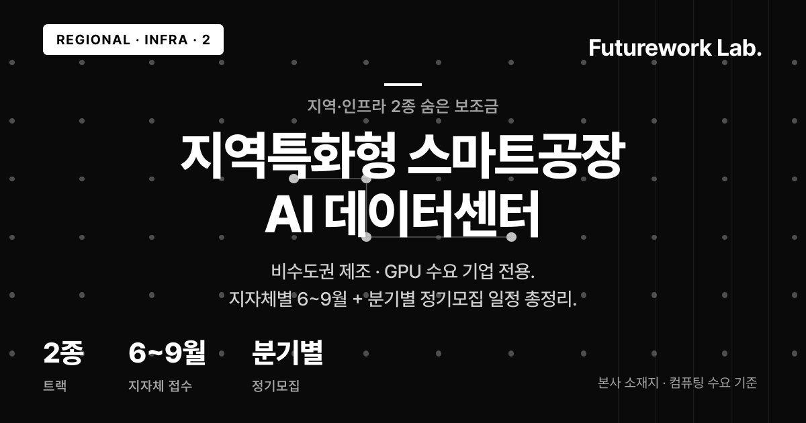

지역·인프라 2종은 2026년 하반기 제조 AI 지원사업 중 가장 적게 알려진 "숨은 보조금" 라인입니다. 비수도권(서울·경기·인천 외) 본사 제조 기업이나 GPU 학습 수요가 있는 기업이라면, ⑧ 지역특화형 스마트공장과 ⑩ AI 데이터센터 서비스를 묶는 것만으로 하반기 전략의 절반이 잡힙니다. 광역 지자체와 테크노파크(시·도별 제조 R&D 공식 채널) 공고란이 1차 채널이라 검색 노출이 약하다는 점이 오히려 기회입니다.
TL;DR. ⑧ 지자체별 5천~1억(보조 50%), ⑩ 분기별 GPU 크레딧(일부 무상). 비목이 달라 병행 가능. 전체 지형은 2026 하반기 제조 AI 지원사업 Top 10 전체 보기.
1. ⑧ 지역특화형 스마트공장 — 지자체별 5천~1억, 6~9월 순차
광역 지자체와 테크노파크가 주관하는 지역 맞춤 제조혁신 사업입니다. 17개 시도가 독립적으로 예산을 집행해 통합 일정표가 없다는 점이 "숨은 보조금"의 이유입니다.
| 항목 | 내용 |
|---|---|
| 주관·접수 | 광역 지자체 / 테크노파크 · 6~9월 순차 |
| 한도·보조율 | 지자체별 5천만~1억 · 보조 50% 내외 |
| 대상 | 해당 광역 본사·사업장 보유 제조 중소·중견 |
자격은 기업등기부등본 본사 주소로 1차 필터링됩니다. 최근 공고는 설비뿐 아니라 AI 공정 최적화·품질 예측·문서 자동화 소프트웨어 도입도 허용하므로, 지원비목에서 "AI 솔루션 구축비" 유무가 적합성 신호입니다. 이미 MES(제조실행시스템)나 ERP(전사자원관리)를 운용 중인 비수도권 제조라면 ⑧으로 AX Flow 운영 레이어를 도입한 뒤 다음 해 자율형공장 AI트랙(최대 2억)으로 고도화하는 2단 진입이 현실적입니다. 세부는 지역특화형 스마트공장 공식 공고(기업마당).
2. ⑩ AI 데이터센터 서비스 — 분기별 GPU·컴퓨팅, 일부 무상
과기정통부와 NIPA(정보통신산업진흥원)가 주관하는 컴퓨팅 리소스 지원사업입니다. GPU·스토리지를 자비로 사지 않고 "GPU 크레딧"(시간당 사용권) 형태로 받으며, 2026년 2Q·3Q·4Q 정기모집이 열립니다.
| 항목 | 내용 |
|---|---|
| 주관·접수 | 과기정통부 / NIPA · 2Q(5월)·3Q(8월)·4Q(10월) |
| 지원·보조율 | GPU 학습·추론 크레딧 · 일부 무상(트랙별 자부담 여지) |
| 대상 | 학습 데이터 보유 + 모델 학습·추론 수요(업종 무관) |
일반 바우처는 연 1~2회라 탈락하면 1년을 기다려야 하지만, AI 데이터센터는 분기마다 다시 열리기 때문에 3개월 뒤 재도전이 가능합니다. AX Flow는 외부 데이터로 다시 학습할 필요는 없지만 도메인에 맞춰 모델을 정기적으로 다듬는 GPU 작업이 반복 발생합니다. 이 GPU 비용을 분기별 크레딧으로 받아 루틴화하면 연간 운영비의 상당 부분을 보조금으로 채울 수 있습니다. 일정은 AI 데이터센터 서비스 공식 공고(기업마당)에서 확인할 수 있습니다.
3. 본사 소재지·컴퓨팅 수요 매칭
| 본사 소재지 | ⑧ | ⑩ | 메모 |
|---|---|---|---|
| 부·울·경 / 대·경 / 광·전 / 충청 | ◎ | ○ | 제조 벨트, 비수도권 우대 |
| 강원·제주 | ○ | ○ | 예산 소규모, ⑩ 안정적 |
| 경기 | ○ | ○ | 경기TP 활발 |
| 서울 | △ | ○ | ⑧ 자격 외 다수 |
서울 본사라면 ⑧ 대신 바우처 3종 단계별 매칭 보기에서 AI 통합·혁신·데이터바우처 조합을 확인하세요.
4. 조합 시나리오 — 충북 GMP 제약 중견 사례
충북 본사 GMP 제약 중견(MES·ERP 10년차)이 AX Flow로 배치 제조지시서 자동화와 일탈 보고서 OCR 요약을 도입한다고 가정합니다. 1단계, ⑧을 충북TP 7~8월 공고로 한도 1억·보조 50%로 신청하고 인건비 현물 인정분을 반영하면 실현금 자부담을 3천만 원대로 조정할 수 있습니다. 2단계, ⑩을 3Q 파인튜닝 크레딧과 4Q 추론 운용 크레딧으로 쪼개 신청하면 한 번에 묶는 것보다 선정률이 유리해, 현장 자부담 3천만 원대에 더해 GPU 비용 부담을 보조금으로 상당 부분 치환할 수 있습니다. 실제 자부담률·비목 인정 범위는 공고문과 승인 과정에서 확정됩니다.
5. 자주 묻는 질문 (FAQ)
Q1. ⑧ 지역특화형은 어떻게 찾나요?
본사 소재지 관할 테크노파크 공고란을 주 1회 확인하고, 기업마당에 검색 알림을 걸어 이중 백업합니다.
Q2. ⑩ GPU 크레딧은 누가 쓸 수 있나요?
학습 데이터·학습·추론 수요가 있으면 업종 무관 신청 가능하며, 2Q·3Q·4Q 별도 모집이라 재도전이 쉽습니다.
Q3. 완전 무료인가요?
일부 무상이 원칙이며 과업 규모·트랙에 따라 자부담 매칭이 붙을 수 있어 공고문의 민간 부담 비율을 먼저 확인하세요.
Q4. 수도권 본사도 ⑧이 가능한가요?
대다수 공고가 해당 광역 본사·사업장 보유로 자격을 한정합니다. 서울 본사는 ⑧을 포기하고 바우처·자율형공장 트랙으로 전환이 효율적입니다.
Q5. 두 사업 병행이 가능한가요?
주관 부처가 달라 동일 비목을 이중 청구하지만 않으면 병행 가능합니다. ⑧으로 현장 도입, ⑩으로 학습·추론 인프라를 분리 조달하는 조합이 대표적입니다.
6. 다음 액션
5~7문항으로 내 회사 맞춤 Top 3 즉시 매칭 → 2분 자가진단 — 지역·인프라 매칭
공고 포착·분기별 신청 전략 함께 설계 → 15분 전문가 무료 상담 신청
함께 읽으면 좋은 글
- 2026 하반기 제조 AI 지원사업 Top 10 전체 보기
- 지역특화형 스마트공장 공식 공고 (기업마당)
- AI 데이터센터 서비스 공식 공고 (기업마당)
- 바우처 3종 단계별 매칭 보기
- 메인 재공고 3종 — 자율형공장·AX-Sprint·상생형 비교
#지역특화형스마트공장 #AI데이터센터NIPA #지자체스마트공장지원 #GPU크레딧지원사업 #비수도권제조지원 #테크노파크스마트공장 #AI데이터센터정기모집 #2026하반기보조금 #제조AI숨은보조금 #AXFlow